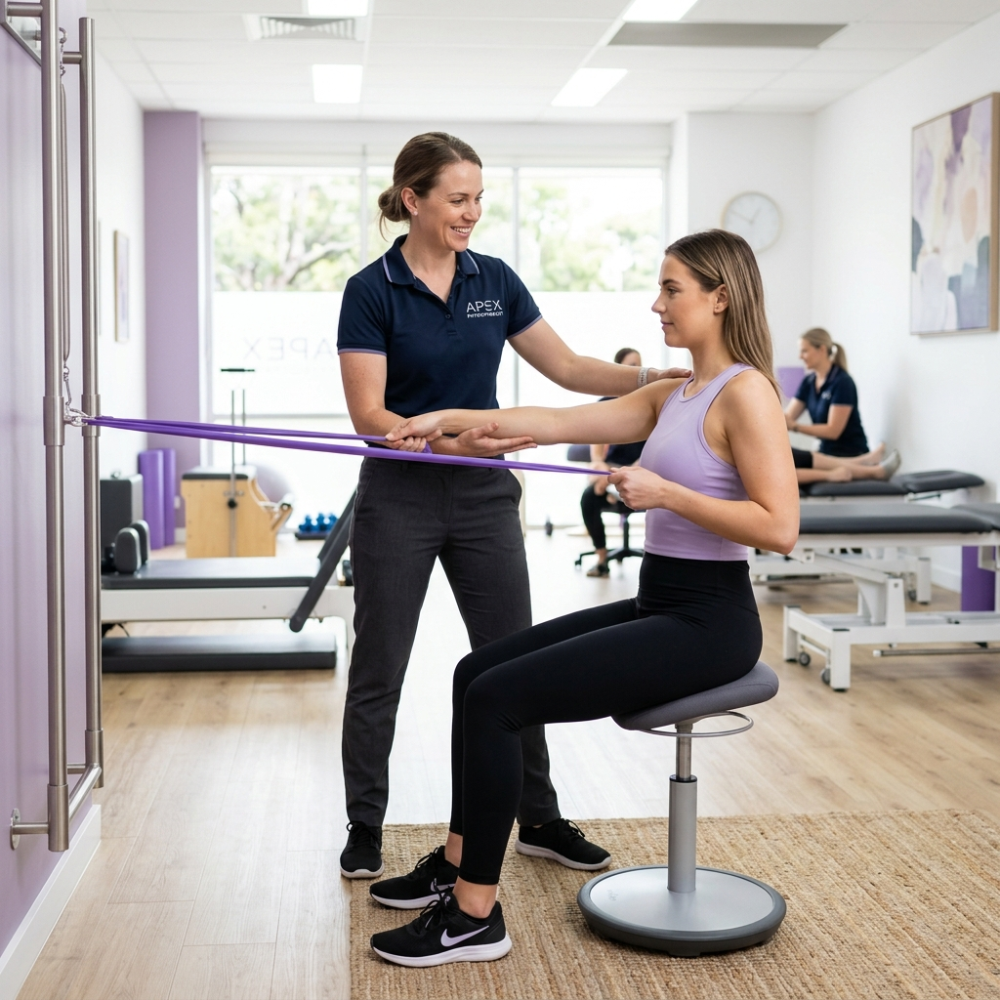

Advanced physiotherapy and rehabilitation in Ullal, Bengaluru. Manual therapy, sports rehab and neuro recovery by Dr. Kalash Patil. Call 063608 55615.

At Hermes Health Care in Ullal, Bengaluru, we are dedicated to providing world-class Physiotherapy services. Our clinic serves as a primary healthcare anchor for residents of Ullal, Jnana Ganga Nagar, Rajarajeshwari Nagar, Nagarbhavi, Kengeri, and surrounding areas. Our patient-first philosophy guides our team of experienced doctors and medical specialists to deliver evidence-based, compassionate care in a state-of-the-art facility.
Our clinical approach combines advanced diagnostics with specialized consultation to manage acute illnesses, track chronic conditions, and promote preventative wellness. We believe that health management should be comprehensive, accessible, and customized to each individual's unique physiological needs. Whether you require a routine health screening, minor surgical interventions, advanced physiotherapy programs, or specialist consultations for complex systemic illnesses, our multidisciplinary team coordinates closely to support your path to recovery.
Hermes Health Care represents a modern day care and multi-speciality model. This means that we perform diagnostics, consultations, minor surgeries, and active rehabilitation all under one roof, saving patients from the stress of navigating large corporate hospitals for primary and secondary care. We run daily clinics from 9:00 AM to 9:30 PM, ensuring that healthcare is accessible even during late evenings for working professionals and families.
Do you have questions about our Physiotherapy services? Consult our doctor today.
If you or your family members are experiencing any of the following symptoms, scheduling a medical consultation at Hermes Health Care in Ullal is the first step toward diagnosis and relief. Ignoring early warning signs can lead to complications and chronic health challenges.
Continuous aches, soreness, or muscle tension in the neck, upper back, shoulders, or calf muscles.
Inability to flex or move limbs fully following orthopedic surgery, requiring active mobilization.
Unsteadiness during walking, frequent falls, or difficulty coordinating basic physical movements.
Acute swelling, bruising, and joint instability following an active sports twist or ligament injury.
Paralysis, muscle weakness, or loss of motor control on one side of the body following a stroke.
Persistent neck stiffness, rounded shoulders, and headaches associated with poor workplace ergonomics.
Experiencing any of these warning signs? Let our clinical team examine you.
At Hermes Health Care, our clinical infrastructure is fully equipped to diagnose, manage, and treat a wide spectrum of health conditions. Our focus is on restoring health through evidence-based protocols and individualized medical attention.
Do you need specialized care for any of these conditions? Schedule an evaluation today.
Accurate treatment depends entirely on precise diagnostics. At Hermes Health Care in Ullal, Bengaluru, we employ a meticulous diagnostic approach. Our in-house clinical laboratory operates under strict calibration standards, utilizing modern diagnostic equipment to deliver highly reliable results.
During your consultation, our doctors perform detailed physical examinations and take a comprehensive history of your symptoms. Based on their initial findings, they may recommend targeted diagnostics, which can include pathology blood profiling, biochemistry panels, digital ECG, Holter monitoring, or low-dose digital X-rays. Having these services available in-clinic ensures that we can quickly correlate laboratory data with your clinical presentation to make safe, fast, and effective treatment decisions.
We prioritize patient comfort and safety during all diagnostic procedures. Our lab technicians are highly trained in pediatric and geriatric phlebotomy, ensuring blood collection is as painless and stress-free as possible. For patients with mobility limitations, we coordinate home sample collection services across Ullal and nearby neighborhoods, bringing our certified laboratory standards directly to your doorstep.
Do you need to schedule a diagnostic test or health package? We offer fast reporting.
We design personalized treatment regimens tailored to the severity of your condition, age, lifestyle, and overall wellness goals. Our clinical team believes in evidence-based pathways, utilizing conservative and medical therapies as a primary line of treatment, reserving surgical interventions for cases where structural corrections are absolutely necessary.
Our treatment options span advanced pharmacological management, specialized daycare therapies, structured physical rehabilitation, and minor outpatient surgical procedures. By combining the skills of our general physicians, orthopaedic surgeons, diabetologists, gynecologists, and physiotherapists, we provide comprehensive, cross-specialty recovery plans. This is particularly beneficial for senior patients managing multiple conditions, such as arthritis, diabetes, and hypertension, who require carefully coordinated medical supervision.
Education is a core pillar of our treatment philosophy. We spend time helping patients understand their diagnoses, the therapeutic mechanism of their prescribed medications, and the importance of active lifestyle modifications. Our team provides detailed guidance on clinical nutrition, therapeutic exercises, and stress management, empowering you to maintain long-term recovery and prevent future health complications.
Consult our clinical specialists to map out your personalized recovery pathway.
Choosing Hermes Health Care for your medical needs provides numerous clinical and patient-centered benefits:
Experience premium, patient-centric healthcare. Schedule your visit today.
To help you understand why Hermes Health Care is preferred by residents in Ullal, Bengaluru, we have compiled a comparison table outlining key differences between our patient-first facilities and typical local clinics:
| Feature / Modality | Hermes Health Care | Average Care Clinics |
|---|---|---|
| MPT Qualifications | Post-graduate specialists (MPT, COMT) | BPT or assistants only |
| Advanced Modalities | IFT, TENS, Ultrasound, Lumbar/Cervical Traction | Basic heat packs only |
| Manual Therapy Specialization | Myofascial release, osteopathic mobilization | Only machine-based therapy |
| Hospital Coordination | Immediate clinical loop with orthopaedic surgeons | No direct physician oversight |
Highly qualified and certified specialists delivering evidence-based patient-first solutions.
Specialist in advanced manual therapy, spinal mobilization, orthopedic rehabilitation, and neurological conditioning plans.
Book ConsultationSpecialist in orthopedic rehabilitation, postural corrections, athletic muscle conditioning, and pediatric posture therapies.
Book ConsultationWe maintain the highest clinical standards to ensure accurate diagnosis, comfortable procedures, and successful recovery outcomes.
Consult with registered and certified doctors holding post-graduate medical qualifications and years of tertiary hospital experience.
Receive scientifically validated, peer-reviewed therapy plans designed around the latest international medical guidelines.
We prioritize your questions, values, and comfort, ensuring you never feel rushed during physical examinations or consultations.
We deliver outpatient consultations, diagnostics, and daycare procedures to residents in nearby neighborhoods:
Have questions about our Physiotherapy services? Browse answers to common patient inquiries:
A physiotherapist restores physical movement, function, and strength affected by injury, illness, or disability. They utilize manual therapy, targeted exercises, electrotherapy modalities, and education to alleviate pain and improve joint mobility.
You should seek physiotherapy for persistent muscle or joint pain, post-operative recovery (like joint replacements), sports injuries, recovery from strokes, poor posture strains, or chronic neurological stiffness.
The number of sessions depends on the severity of the injury, joint inflammation, and patient recovery rate. Acute muscle strains may resolve in 3 to 6 sessions, while neurological or post-surgical recovery may take several weeks.
Physiotherapy should not cause extreme pain. Some mild soreness is normal as muscles are mobilized, but our MPT practitioners adjust techniques to ensure treatments remain within your comfort limits.
Manual therapy involves hands-on clinical techniques, including joint mobilization, myofascial release, and passive stretching, performed by a therapist to reduce muscle tension and restore joint range of motion.
Yes, Hermes Health Care provides physiotherapy services daily, including Sundays, from 9:00 AM to 9:30 PM, making it highly convenient for office-going professionals.
Physiotherapists focus on whole-body movement, muscle balance, soft tissues, and functional joint recovery. Chiropractors focus on spinal adjustments and nervous system alignment.
Yes! Physiotherapy is a gold-standard treatment for back pain. Through core strengthening, lumbar traction, manual massage, and posture adjustments, we alleviate nerve pressure and stabilize the spine.
Knee pain benefit from quadriceps sets, straight leg raises, hamstring curls, wall slides, and calf stretches. Always perform these under professional physiotherapist supervision to prevent joint overload.
Many corporate health insurance plans reimburse outpatient physiotherapy expenses. We provide detailed bills, clinic receipts, and physician referral notes to support your insurance claims.
You can book a slot at Hermes Health Care in Ullal by calling 063608 55615 or messaging us on WhatsApp to schedule an evaluation with Dr. Kalash Patil.
Electrotherapy utilizes devices that transmit electrical currents or sound waves (like TENS, ultrasound, and IFT) to stimulate muscles, block pain pathways, and accelerate cellular healing in deep tissues.
Yes, we coordinate home visit physiotherapy services across Ullal, Jnana Ganga Nagar, RR Nagar, and Nagarbhavi for elderly patients or individuals with severe mobility constraints.
We treat cervical spondylosis, slipped discs, sciatica, frozen shoulder, osteoarthritis, sports sprains, facial palsy, stroke hemiplegia, Parkinson's disease, and post-surgical stiffness.
Our physiotherapy rates are highly affordable, with options for single sessions or multi-session rehabilitation packages. Contact our reception desk for exact details.
Take control of your health. Consult our experienced medical specialists in Ullal, Bengaluru for expert diagnostic and recovery pathways.